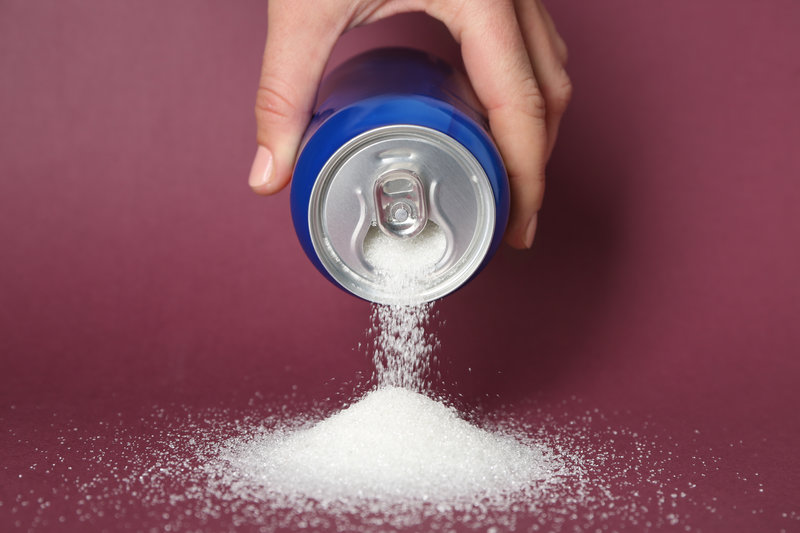
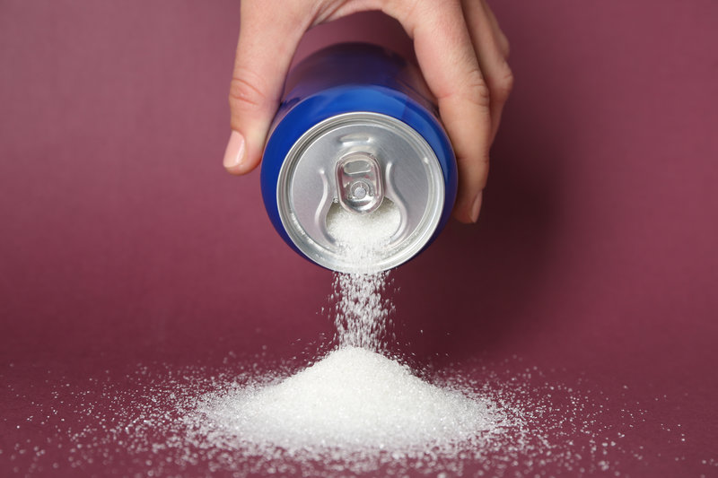

“You wouldn’t have to think twice about giving your kid a Budweiser , but you don’t think twice about giving your kid a can of coke.” Even-though they almost do the same thing to our body. Our brain sends out dolphins when we consume sugar or substances such as drug. Rats were used as experiment by Princeton on addictions, there are two triggers one is to get a pump of sugar water, the other one is to get 0.25 milligram of addictive substance, after 15 days 95% of the rats choose the trigger of a pump of sugar water. We make regulations on illegal substances, but rarely on sugar, and that causes companies to put excessive amount of it in their product so consumers would enjoy and repurchase.
 
